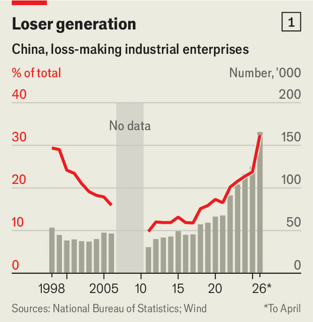
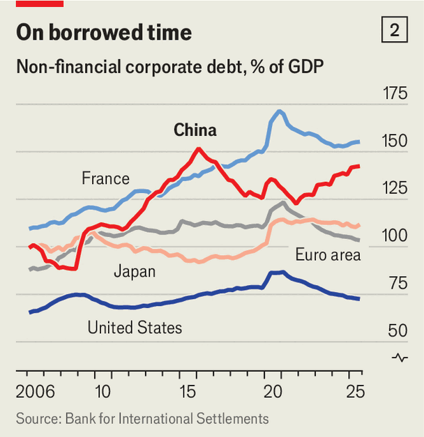

China is innovative. Its economy is a mess. Which matters more?
A question that will define the 21st century
June 11th 2026

IN YINGTAN, a city in the south-eastern province of Jiangxi, China’s high-tech future is spilling into its economically backward past. Old-fashioned open-air markets and street-side eateries make it feel like any other rural town in the Chinese interior. An industrial park to the south of the city, packed with companies working on technologies for industrial digitisation, gives off a techie vibe. A national communications laboratory has set up a state-of-the-art research centre nearby.
Over the past decade local officials have helped transform an antiquated copper industry into one that produces high-end components for its new tech denizens. Yingtan’s technological wagers are starting to pay off. In 2025 its GDP per person surpassed that of the provincial capital, having been a quarter smaller a decade earlier. Yet its economy is still weighed down by a property slump and big debts accrued by the local government since the early 2010s.
These old and new worlds seem distant. But they live side by side in many places across China—and in the economy as a whole. Goldman Sachs, a bank, forecasts that high-end manufacturing will reliably contribute about one percentage point of annual real GDP growth until 2029. Yet the drag caused by the collapse of the property sector, which shaved two percentage points off growth in 2024 and 2025, will also persist for another few years.
The Chinese economy has slowed considerably in recent years, never fully recovering from the unpredictable and disruptive lockdowns of the covid-19 pandemic. A three-year bout of producer-price deflation ended in March only after an oil shock caused by America’s war in Iran raised domestic energy prices. Factories are churning out whizzy electric vehicles for export while Chinese consumers, scarred by memories of the pandemic and the property bust—and exposed by a threadbare social safety-net—are reluctant to spend.
At no time in modern history has a large country gone all in on investment in high-end technology while also navigating a slowing economy and a local-government debt crisis, notes Yuen Yuen Ang of Johns Hopkins University. Although the drag from the property crash will lessen over the next few years, and eventually disappear, it would not take much to choke the new growth engine. It is already being stress-tested by weakening demand for Chinese EVs, a prolonged trade war and an energy crisis. China’s paramount leader, Xi Jinping, is nevertheless betting that the new model of growth kicks in faster than the old one, driven by land sales and construction, collapses. It is a high-stakes gamble.
The old model of growth took shape on China’s coasts before spreading to the interior. Factories in the wealthy east employed poor migrant labourers from the hinterland. Those migrants in turn, unable to obtain residency in metropolises, often used their earnings to invest in property back home. Towering apartment blocks erected during the two-decade property boom have sprung up in the smallest towns, employing tens of millions of construction workers each year and hoovering up low-end manufactures. High-speed rail has penetrated the poorest counties.
All this investment was fuelled by local-government borrowing. One tally puts these debts at around 60trn yuan ($9trn), or 43% of GDP. The comparable figure in America is 12%. The poorest regions often relied the most on debt-fuelled construction of houses, roads and bridges. This has left some places, such as Guizhou province in the south-west, with dazzling infrastructure (including a bridge 626 metres high, the world’s tallest) along with insurmountable debts. Few of these costly public works have so far come close to generating the revenues needed to pay back creditors.
Now investment is going into a narrower range of faster-growing, innovative sectors. The moment Mr Xi announces his technology goals—to lead the world in artificial intelligence, robotics, fusion power and so on—hundreds of cities across the country respond by backing related projects. A national semiconductor fund has raised roughly 687bn yuan over the past 12 years. Government-backed fund managers watched their coffers swell to nearly 400bn yuan last year, an increase of 75% from 2024. In December the state launched a 100bn-yuan national venture fund with a mandate to invest in aerospace, semiconductors, brain-linked machines and quantum technology.
Many local governments, including in small cities, are creating similar vehicles using tax revenues and capital from local state companies. They are setting up “high-tech zones” and “AI parks” to lure innovative companies with tax breaks and other perks. These new tech businesses are meant to generate tax revenue and help local governments grow out of their debts, says Jean Oi of Stanford University. While officials wait for their homespun DeepSeek, the AI lab that stunned the world last year with its powerful model, the central government relaxes the rules to give them more time to repay their debts.
Sometimes local authorities have some success. Rich metropolises such as Beijing, Hangzhou, Shanghai and Shenzhen can draw talent and capital (the four cities are together expected to receive around 70% of AI investment). This in turn may fuel demand for housing and localised recovery in the property sector, observes Lu Ting of Nomura, a bank. A few other cities may have similar luck. Hefei, in sleepy Anhui province, has cultivated several champions. It hosts factories of BOE Technology (a giant of LCD displays) and NIO (a luxury EV-maker). Its university spun out a voice-recognition-AI darling, iFlyTek, and its local government co-founded CXTM, China’s leading maker of advanced memory chips.
To see how such projects go wrong, travel an hour by high-speed rail from Yingtan to Yichun, where a botched attempt to jump up the manufacturing value chain has backfired. In 2021 the city government invested 2.3bn yuan to help build an EV factory in a sprawling National High-tech Development Zone. But in contrast to successful EV clusters like those in Shenzhen and Hefei, the facility was isolated from suppliers and expertise required to build cars efficiently. It has since halted production. The rest of the industrial zone looks just as lifeless.
Even projects that get off the ground may do little for local industry. A decade ago a fund with local- and central-government money poured around 150bn yuan into Guizhou, a mountainous province in central China, mostly into data storage and cloud-computing. But these ventures could not be integrated with local industry, points out Ms Ang. The companies building the data centres are based on the coasts, the server parts are made elsewhere and local demand for the data capacity is scarce. “It is hard for cutting-edge technology to integrate into traditional economies and generate jobs for local populations,” says Ms Ang.

Sometimes the results are tragicomically bleak. The north-western industrial city of Lanzhou has invested in commercial space flight and a “drone economy” project even as it struggled to pay its bus drivers for several years (asking them to take out personal bank loans to tide them over). Even bustling coastal provinces are not immune. When local reporters recently visited AI parks across Guangdong, home to successful Shenzhen, they found them empty or inhabited by non-AI businesses.
It is not hard to see why so many projects fail. Mr Xi’s industrial policy promotes fierce competition in which companies and their host places, sometimes down to city districts, duke it out. This competitive pressure pushes down prices and elevates quality. The best businesses which emerge from this free-for-all, like BYD in carmaking, Huawei in electronics or Xiaomi in both, are formidable and ready to take on the world. They are also rare—and concentrated in established commercial centres, with deeper talent pools and pockets.
Profits are even rarer. Investment returns accrue less to individual companies and more to integrated supply chains, which lower costs and speed up product cycles and innovation, says Chi Lo of BNP Paribas, a bank. The share of industrial firms generating losses has shot to a record high of around 32% in April, up from 10% in 2011 and above the previous peak during the Asian financial crisis in 1998 (see chart 1).
Corporate debt is also high and rising (see chart 2). Mark Williams of Capital Economics, a consultancy, notes that Chinese firms owe twice as much to domestic banks and bond investors today as they did in 2019. In that period GDP has expanded by a third. Companies may move away from productive activities and instead chase subsidies that are available for centrally supported sectors, he says.

Partly as a result, a trio of IMF economists calculated last year, China’s “total factor productivity” (which captures how efficiently both capital and workers are used) was 1.2% lower than it would have been in the absence of industrial policy over the past decade or so. GDP was 2% lower, equivalent to forgoing around $400bn in value added each year. The more companies get caught up in the chase for subsidies and, by slashing their prices, for customers, the harder it will be for them to wring out profits.
It is hardest of all for poor, out-of-the-way places like Yichun and Guizhou. Inland provinces have been generating a declining share of industrial GDP. Last year they contributed 36%, down from close to 48% in 2013, the year Mr Xi took power. This is a big problem for China’s low-skilled workforce, which numbers somewhere between 300m and 400m people. As the state turns its attention to dominance of frontier technologies, more of them will be left behind. Many will have no choice but to return to their family homes in the countryside, says Scott Kennedy of CSIS, a think-tank in Washington.
The infatuation with winning the tech race is like a spell America has unwittingly cast on Chinese leaders, notes a former adviser to the central government. The contest has warped their priorities and prompted them to focus a lot—maybe too much—on cutting-edge technology while doing too little to fix China’s persistent economic problems, the adviser adds.
Robots may be multiplying but citizens remain downbeat. Retail sales grew by 0.2% year on year in April, the lowest reading since late 2022, before China had fully emerged from its devastating pandemic lockdowns. The outstanding value of household bank loans fell for the first time on record in March, compared with a year earlier. It will take a lot more than a few high-tech successes, no matter how spectacular, to lift Chinese spirits.■
For more expert analysis of the biggest stories in economics, finance and markets, sign up to Money Talks, our weekly subscriber-only newsletter.